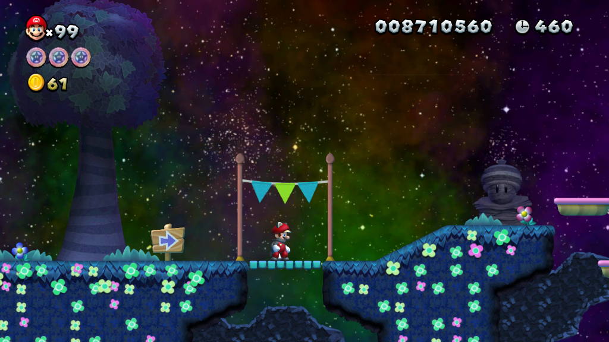

The premise
A sky full of wishes, unraveling from within
Trial Super Mario Bros. U takes place across a world of drifting stars and half-remembered dreams — the kind of sky you'd want to fall asleep under. It's the kind of setting that invites wonder before anything goes wrong.
But Bowser has been reaching further into that magic than he should have. Something answered back: a force with no name, dark enough to bend the dream itself, and it has fused with Princess Peach. What used to be a gentle, glimmering world now carries that corruption at its edges, level by level.
